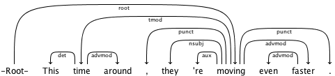
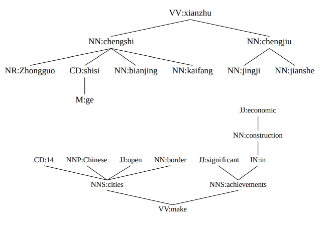

1. 背景介绍
预训练语言模型层出不穷，且已经在NLP任务里取得很好的结果，但我们更需要去理解这些预训练模型学到了什么语言学知识。作者设计了structual probe去检测word representation space里是否学习到了syntax知识。对ELMo和BERT模型生成的word vectors进行了测试，证明了其较好地学习到了syntax tree的知识。
2. 关于dependency tree

- a dependency tree example

3.大体思路
- 用两个词的vector representation的squared L2 distance作为这两个词汇对应node的path length
- 用词汇对应的squared L2 norm来作为词汇对应node的depth(到root node的距离)